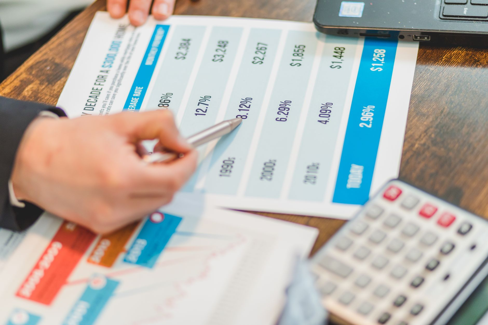

The current state of global interest rates
The global economic landscape is currently undergoing a significant transformation driven by the aggressive stance of central banks. For years, low interest rates encouraged borrowing and fueled growth, but the recent surge in inflation has forced a dramatic pivot. Policymakers are now walking a fine line between cooling down overheated economies and triggering a deep recession.
Central banks, including the Federal Reserve in the United States and the Bank of England, have been utilizing interest rate hikes as their primary tool to combat rising prices. This strategy aims to reduce the money supply and temper consumer demand, but the impact on everyday households is profound. As borrowing costs for mortgages, car loans, and credit cards climb, the cost of living continues to feel heavier for the average person.
Several factors are contributing to this upward pressure on rates, including:
Analyzing the drivers of inflation
To understand where interest rates are headed, we must first understand why inflation has become so stubborn. Inflation is essentially the rate at which the general level of prices for goods and services is rising. When inflation exceeds the targets set by central banks, typically around two percent, it signals that the economy might be moving too fast or that supply cannot keep up with demand.
The challenge for central bankers is not just to stop inflation, but to do so without causing a systemic collapse in employment and consumer confidence.
Economists are closely monitoring various indices to gauge the severity of the situation. The Consumer Price Index (CPI) remains a critical metric, providing a snapshot of how much more expensive a basket of goods has become compared to the previous year. However, many experts argue that looking at headline inflation alone is insufficient, as it can be skewed by volatile items like food and energy.
The impact on consumers and businesses
The ripple effects of higher interest rates are felt across every level of society. For consumers, the most immediate impact is often seen in the housing market. As mortgage rates rise, many potential homebuyers find themselves priced out of the market, leading to a slowdown in real estate transactions and a shift in how people approach long-term debt.
Businesses are also facing a much more difficult environment for expansion. When the cost of capital increases, companies are less likely to take out loans for new equipment, research and development, or hiring. This can lead to a cooling effect on the job market, which is a double-edged sword for central banks: they want to slow down wage growth to curb inflation, but they do not want to trigger mass unemployment.
Predicting the future path of monetary policy
Will interest rates continue to climb, or have we reached the peak? The answer depends heavily on upcoming economic data releases. If inflation shows signs of cooling, central banks may pause their hiking cycles or even begin to discuss rate cuts. Conversely, if inflation remains sticky or begins to accelerate again, further hikes are almost certainly on the table.
Market analysts are currently divided on the trajectory. Some suggest that the lag effect of previous rate hikes has not yet fully permeated the economy, meaning we could see a delayed impact that leads to a sharper downturn than expected. Others believe that the economy has shown remarkable resilience and that a soft landing—where inflation is tamed without a recession—is still achievable.
Key indicators to watch in the coming months include: Employment reports and unemployment rates Quarterly GDP growth figures Central bank meeting minutes and official statements Global commodity price trends
Broader political and economic connections
Economic conditions rarely exist in a vacuum. The decisions made by central banks often influence political landscapes and voter behavior. When people feel the pinch of high interest rates and rising prices, it often leads to shifts in political sentiment and changes in how governments are perceived by the electorate.
This intersection of economics and politics is a recurring theme in modern history. For instance, looking at how economic dissatisfaction can drive political shifts, one might find parallels in our previous analysis of Why Republicans Faced a Major Defeat in Recent Elections at https://dhyey.bond/blog/why-republicans-faced-a-major-defeat-in-recent-elections/. Understanding these connections helps provide a more holistic view of how the world operates.
Ultimately, the path of interest rates will dictate the rhythm of global finance for the foreseeable future. Whether we are entering a period of prolonged high rates or a quick return to stability, staying informed is the best way to navigate these turbulent economic waters.
See Also
If you enjoyed this Current Events article, check out Why Republicans Faced a Major Defeat in Recent Elections for more useful reading.